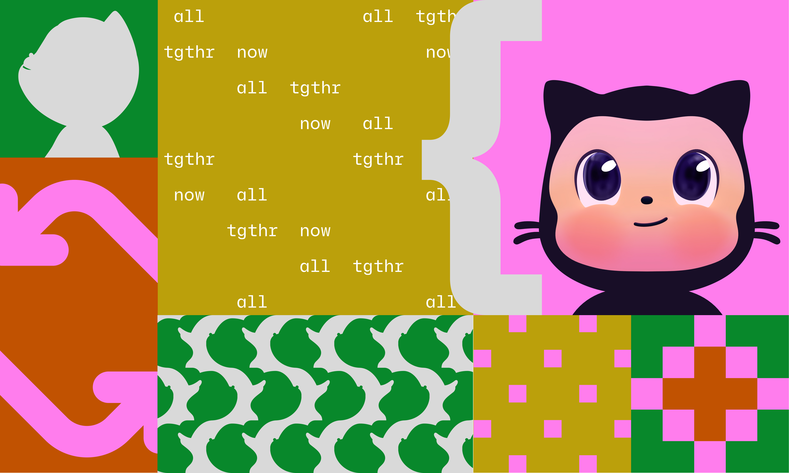
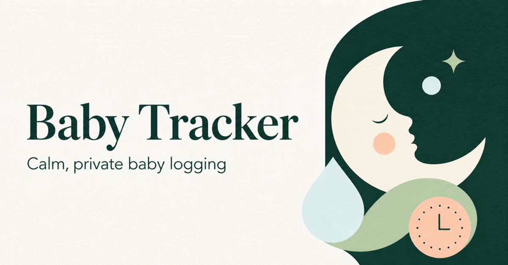
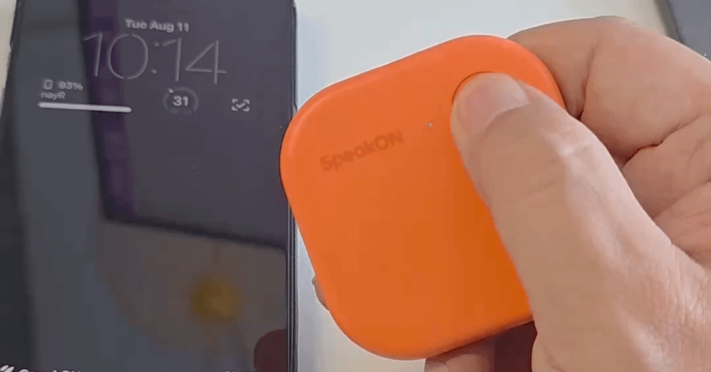
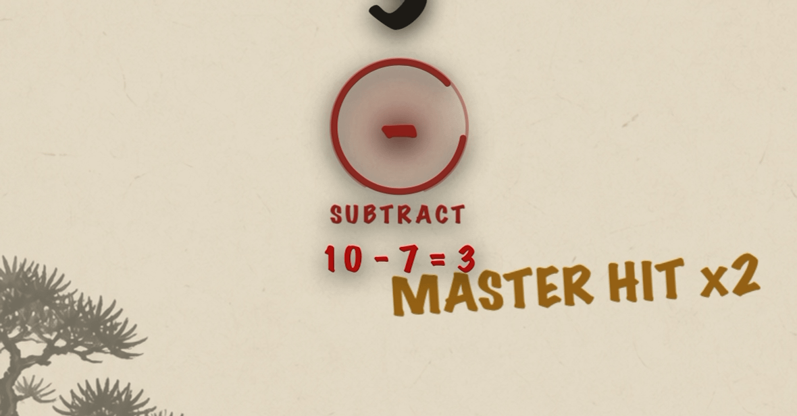
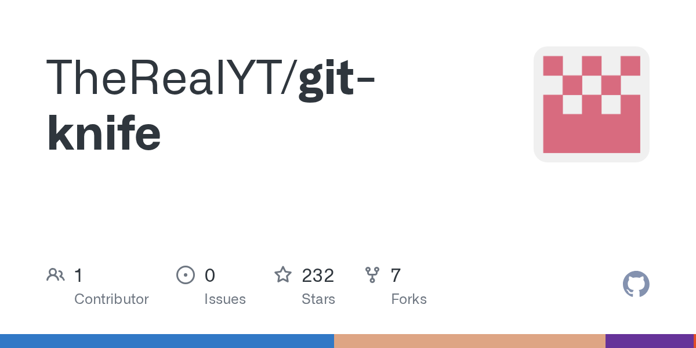
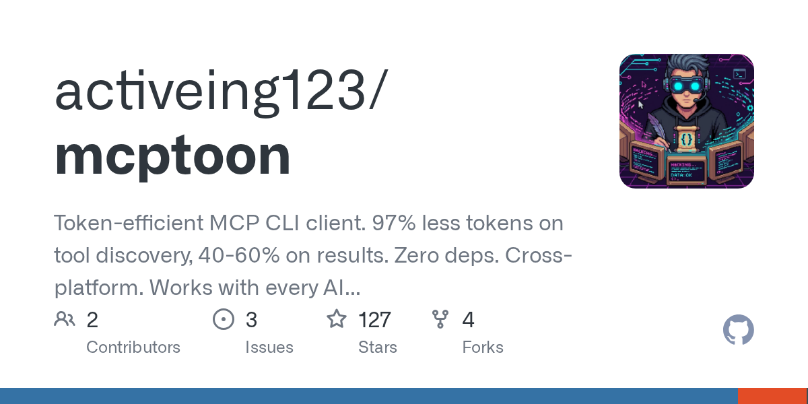

🔥 Top 3 (must read)
From coder to orchestrator: How agents shift the role of a developer
GitHub argues that as coding agents take over more of the typing, developers move up a level: they own the delivery system around the code, not just the code itself. The post frames this as a career-growth shift, not a threat. Why it matters to you: This is exactly the conversation you will have with your team as an EM — how roles and expectations change when agents write a big share of the code.

There are no lossless transformations of natural-language text
Sophie Alpert shares her internal policy on when engineers may use AI to help with writing. The core rule: any transformation of text (summarize, polish, expand) loses or adds meaning, so you must stand behind every word you send as your own. Why it matters to you: It is a short, ready-made template for a team AI-writing policy — useful for design docs, PR descriptions, and postmortems on your team.
S
Stealing Reasoning Traces from Proprietary LLM APIs
A paper shows that encrypted chain-of-thought blocks returned by Anthropic, OpenAI, and Google APIs can be replayed into weaker sibling models and extracted from there. In short: the "hidden" reasoning your app receives is not as private as the providers imply. Why it matters to you: If your products call LLM APIs, treat reasoning blocks as data that could leak — do not assume they are a safe place for anything sensitive.
S
🎯 For me
Today's best matches are the EM-angle reads in Top 3: the GitHub piece on how agents reshape the developer role, and Sophie Alpert's AI-writing policy you could adapt for your team. No Node.js/React/Flutter releases or testing news made the cut today.
💡 App ideas & indie builds
Free, local-first baby tracker
A dad got tired of subscriptions and ads while logging a 3am feed, so he built a one-tap, one-handed tracker with big buttons. Great example of a niche where the user problem is not features but respect for context (dark room, one tired hand, no ads).

Physical button for capturing iPhone notes
A hardware button that saves a note without unlocking the phone. The problem: friction kills capture. Idea seed: any app where cutting steps from 5 to 1 is the whole product.

Multiplication table game
A parent turned teaching their son the times table into a game. Classic indie pattern: build for one real user at home, then ship it — education apps born this way often feel more honest.

Git-knife
(HN discussion, 138 points) — Edit commit messages, authors, and dates like a spreadsheet instead of fighting interactive rebase. Shows there is still room for small tools that put a friendly UI on a scary git workflow.

Mcptoon — token-efficient MCP CLI client
(HN discussion) — A CLI client that cuts token waste when talking to MCP servers. The problem (context and token cost in agent setups) is one you hit directly with Claude Code.

🎓 Try this
Try Write.md — a free, open-source, themeable Markdown editor for macOS (HN discussion). Low-risk to test today, and a nice reference for how a polished single-purpose macOS app is built and pitched.